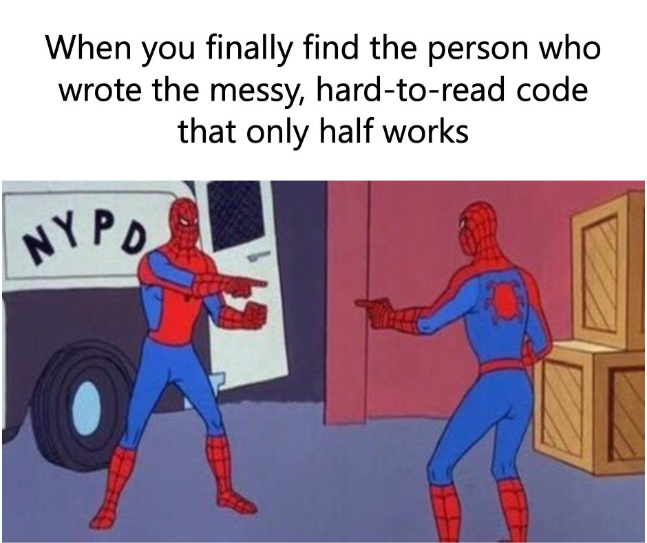
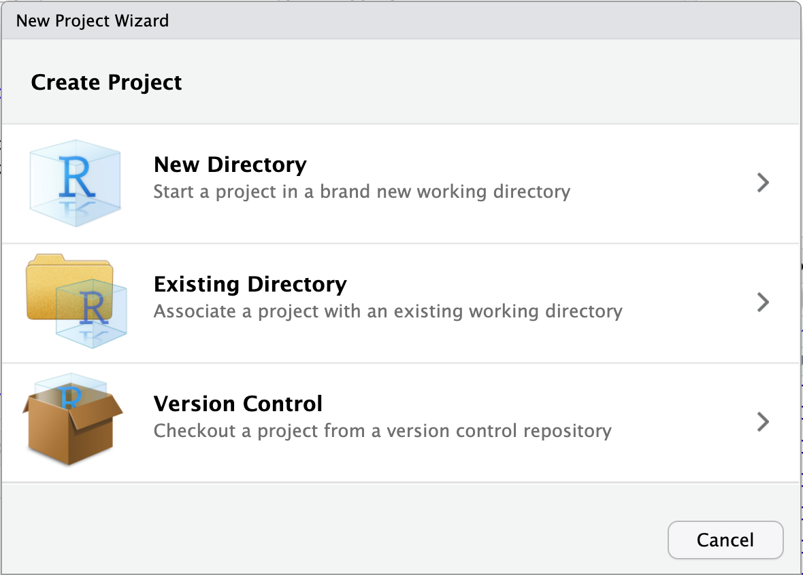
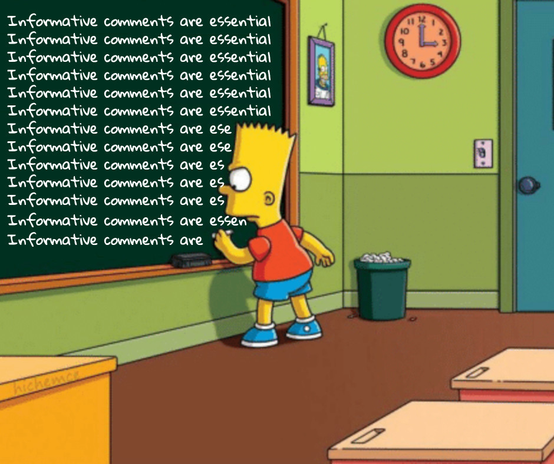

The most boring yet essential skill: organizing files and codes
The ability to reproduce an analysis is essential for any research project or study based on quantitative data. Reproducibility depends on the data (e.g., availability of raw data), software (e.g., statistical software and/or packages used) as well as hardware and operating system. A basic form of reproducibility is when you can repeat run your own analysis and obtain the same results you had before. Being able to understand and track each steps you performed with your data is a key part of this process. The purpose of this blog is to introduce simple tips and tricks that support reproducible science. More advanced practices are introduced at last.
Disclaimer: I don’t claim to have perfect coding practices or to have always had state-of-the-art reproducible practice. Rather, I wish to share the experience I acquired until today and allow you to draw inspiration from it according to your needs. Please also note that I focus on reproducibility and coding in the context of academic research and health research in particular. Other fields, e.g., softwares and engineering, may already adopt basic reproducible practices that would be considered advance compared with the concepts I introduce in this blog. Obviously, my modest introduction is not meant for advanced users familiar with coding, versioning, code distribution, etc.
Prerequisite
To ensure analyses are reproducible, it is essential that you can go from the raw data file to your results in a single continuous workflow. In other words, a reproducible analysis allows someone else (or a future you!) to follow the story of your data all the way to your results, including text, tables and figures. Having to intervene “manually”, e.g., typing numbers at some point based on another analysis, or performing back and forth exchange between your data and your analysis would not be considered reproducible. Indeed, the manual operations are not tracked and would have to be repeated each the analysis requires an update.
This means that you can’t (and generally should never) modify your raw data in Excel for example, at least once it is finalized. Similarly, you shouldn’t use point-and-click software like SPSS if you don’t intend to save the generated script that allows you to repeat your analysis.
You may still wonder though, “what if my analysis is fairly simple and does not take a long time to do. Why should I document it with script/code?”. Or, perhaps, “I don’t have time to learn coding since I need results fast!”. My answer is that you should definitely learn at least a little coding. Learning to code is an investment that will save you an enormous amount of time in the medium-to-long term.
Advantages of Using Analysis Script/Code
Common data manipulation and analysis steps include renaming variables, recoding values, performing arithmetic operations, transposing data, modelling etc. The importance of all these data manipulation steps is greatly underappreciated in science (Leek & Peng, 2015). Perhaps this is a personal hot take, but I am convinced that a given statistic or p-value in a scientific paper is almost meaningless if not all steps leading to it are properly documented.
All data cleaning, manipulation and analysis steps can and should be performed using statistical code or script. A script is the storyline of your analysis. It describes the operations to perform on your dataset and analyses in a given language. Common statistical software/languages include R, python, SAS and SPSS. Having a script of your analysis is extremely useful for many reasons.
- You can share your script with others for reviewing purpose. Without this storyline, it is almost impossible to know exactly what happened to your data and how you got to the results.
- You can go back to an older project and understand what happened. Common situations include a colleague or your advisor asking if you “adjusted for variable X?” or perhaps, if you had considered data from a given study participant?
- You can re-run an entire project if new or revised data are available in a matter of minutes instead of having to tweak data manually, and update every values in tables and figures. I have had to do this in the past and it can be very stressful and cumbersome. Typically, even when you think that you are done forever with given analysis, it is often the case that a re-run will be needed later on.
- You can reuse your previous codes for any new analysis. For example, complex data manipulations that would take hours to do in Excel can be repeated in a matter of seconds if you saved the code. There is of course a balance between the flexibility of code (ensuring that it can be used in the future in a different context) and short-term time efficiency (making it work right now). Nonetheless, having a starting point very often saves a lot of time.
Which Statistical Software Should I Use?
The tips and tricks I describe below are good for any software. Personally, I have been using R and SAS. For demonstration purpose, I will focus on these two softwares in this blog. When deciding on a statistical analysis software, relevant considerations are:
- Open source: R (and python for example) have the advantage of being open source, thus accessible by a larger community
- Use within your team: using the same statistical software as the one used in your research team will make collaboration easier. Being able to use code previously developed or ask your questions to close colleague will significantly speed your work.
- Use in university courses you must attend: having working knowledge of a particular software will make the course much easier.
- Career goals: the relevance of your coding skills after you finish your graduate studies may guide your choice. If you aim to work in private or industry setting, R or python may be better investments. If you aim to work at a government institution, knowing SAS may offer you a significant advantage.
All in all, if you have never used any statistical software and you aim to do statistical analyses for academic research, R/RStudio is a great place to start. I believe R offers much more robust solutions to enhance reproducibility, particularly for integrating analysis code, text and results (see More Resources and Advanced Practices below).
The Issue of Reproducibility and Organization
Say for example that you analyze your study data and make a table with results. A couple of weeks go by and you need to revisit your analysis. However, your analysis folder includes a variety of code or script: final_first_code, final_code2, final_final_code2, full with tables_correct and others. After a thorough investigation, you manage to find the correct “final” script that allowed you to obtain your results in the first place. However, the output seems drastically different: the results from this “new” run are not consistent with your initial results. This begs the question: were the first results even accurate? Or is it that you forgot a key portion of code in the latest run? You search for clues in the files but you can’t remember in what particular order you had ran your code in the first place. The only solution seems to start from scratch again. What was supposed to be a quick check turns out to require the whole week!
Perhaps the situation described above happened to you or a colleague. Unfortunately, basic practices regarding code organization and reproducibility are not often taught in health graduate programs. My hope is that this blog post can help you get started with good enough practices.
Step 1. Organization of Project Files
Ideally, you should create one folder on your computer which will include your data, code and results. This will greatly facilitate “communication” between your script (storyline), your data and your results.
Typical Directory Tree
The figure below shows an example of generic directory tree for a resarch project. You can always modify folder name or set-up according to your preferences, but I found this structure to work well.
%%{init: {'theme': 'neutral' } }%%
flowchart LR
P(["MyProject/"])
P-->A
P-->B
P-->C
P-->D
P-->E
A("Data/")
A1("Raw/")
A2("Processed/")
A-->A1
A-->A2
AT1{{"Raw study data<br>(<b>Never</b> edit manually!)"}}
A1-.-AT1
AT2{{"Raw study data once<br>processed with code"}}
A2-.-AT2
B("Script/")
BT1{{"Functions (R) or macros (SAS)"}}
B-.-BT1
C("Results/")
CT1{{"Intermediate data<br>from analyses"}}
C-.-CT1
D("Manuscript/")
D1("Article/")
D2("OSM/")
D-->D1
D-->D2
DT1{{"Manuscript text with<br>code (e.g., RMD/Quarto)"}}
D1-.-DT1
DT2{{"Supplemental material with<br>code (e.g., RMD/Quarto)"}}
D2-.-DT2
E("Temp/")
ET1{{"Temporary files<br>(if needed)"}}
E-.-ET1
Other Directory Tree Example
Figueiredo et al. (2022) provides a great tutorial regarding file organization for a scientific project. These authors also provide a tool kit that will automatically create all required folder for a project. I encourage you to read their paper to consolidate your knowledge of file organization and analysis script.
Multiple Files for Analysis Code/Script
I like to include the scripts for the main analysis at the root of the project folder, e.g., directly in MyProject/ using the directory example above. To track the order in which codes must be executed, I use numerical prefix (e.g., 1.0, 2.0, 3.0) and decimals for subcodes (e.g., 1.1, 1.2, …). A common structure I use is as follows:
1.0-data_preparation: initial cleaning, manipulation and formatting of raw data;2.0-preliminary_analysis: derived variables based on data from the previous code, descriptive statistics or multiple imputation procedures are example of code that can be included here;3.0-main_analysis: the main analysis of your project. Additional subcodes can be used if a given analysis is complex or requires multiple steps (e.g.,3.1-main_analysis_A,3.2-main_analysis_B,…);4.0-main_analysis_objective2: when very different statistical analyses are used, separating the code in a new script with a different prefix may enhance clarity;5.0-results: any additional steps needed to obtain or prepare your results. This can include gathering data in a format suitable for table presentation or figure preparation. Typical examples include rounding numbers, aggregating estimate with their confidence intervals or preparing figures. More complex analysis may include dealing with multiple imputation data or performing bootstrap variance estimation.9.0-manuscript: I recommend using RMarkdown/Quarto to create a single document that will include analysis, text, tables and figures (see More Resources and Advanced Practices below).
I find this structure is especially useful when dealing with analyses that include very computationally intensive steps. Indeed, I can run each script separately which is essential when one in particular may take hours to complete.
You can obviously adapt this example to your needs. For example, in the case of less complex and less computationally intensive analysis, perhaps all the script/code above could be integrated in a single file: 9.0-manuscript. In such case, you would still adopt a structure similar to the one above, but instead of having multiple scripts, you would have multiple clearly defined sections.
Main Analysis Script vs. Script Folder
The Script/ folder within a project is most useful to include custom functions (R) or macros (SAS) made to perform specific tasks. Such codes are commonly use for repetitive tasks and to make the main analysis file less cumbersome.
For example, you may need to read/import many Excel files and clean values the same way for each, e.g., convert number stored in character field to numerical or remove spaces in variables names. One way to do this is to write the code and copy/paste it for each datafile. A much better way to do this is to write a function that will perform all these steps according to the varying input dataset. Instead of copy/pasting your code for each datafile separately, you can use your custom in-house function, e.g., Script/read_n_format_xlsx.R, and apply it to each datafile. If you ever need to change one of the steps, you would only need to modify the function once instead of every instances where you copy/pasted your code. All in all, any repetitive task you must perform should ideally be coded as a function that can be reused and updated fairly easily.
A general advice when writing functions or macros is to focus on small, manageable code at a time instead of trying to write one big chunk of code that does everything. When there are errors, the latter is harder to debug since more code must be revised to find the source of the errors.
Functions in R
You can ask R to keep the script in memory by writing source(./Script/read_n_format_xlsx.R) before executing the code. This assumes the R script file read_n_format_xlsx.R exists in the folder /Script/.
See an example below of a function that could be put in the Script/ folder and used multiple times for different files.
# R function to read an Excel file, 'clean' variables names, rows and columns
read_n_format_xlsx <- function(my_file){
my_file_ready <-
readxl::read_xlsx(my_file) |>
janitor::clean_names() |>
janitor::remove_empty()
return(my_file_ready)
}Macros in SAS
You can ask SAS to keep a macro in memory by writing %include "./Macros/read_n_format_xlsx.sas"; before executing the code. This assumes a .sas file file named read_n_format_xlsx.sas exists in the folder /Macros/.
Step 2. Dealing with File Location
A common step to all projects is that we need our code to read the data. Thus, we need a way to tell the statistical software where the data are located on the computer.
File Location in R
In R, the best method to deal with file location is to use a combination of an R project and the here package.
First, create a project using in RStudio by clicking on File then New Project. A window similar to one in the picture below should appear. You can then create a project in a new folder or associate it to an existing folder.

You can then open the project by clicking on the YourProject.Rproj file. Basically, this opens an RStudio window and sets the working directory to the root of your project folder. For example, if you type and execute getwd() after opening your project, the working directory should be your project folder.
Next, you can now refer to any file using here::here(). For example, based on the sample directory tree I presented above, I would write the following code to read a data named final_data_2023-08.csv:
# 0) Assuming a project ("Your_Project.Rproj") file was created:
# 1) Create shortcuts to the raw and processed data folder
rawdata_dir <- here::here('Data', 'Raw')
procdata_dir <- here::here('Data', 'Processed')
# 2) Read hypothetical raw (unedited) CSV data
raw_data <-
read.csv(file.path(rawdata_dir,
'final_data_2023-08.csv'))
# 3) ... data cleaning, manipulation and preparation ...
# 4) Save hypothetical 'clean' R data
saveRDS(processed_data,
file = file.path(procdata_dir,
'final_data_processed.rds'))For comparison purpose, here is the same code written without a .Rproj file and here::here():
# 1) set working directory - To update manually
setwd('/Users/Your_Name/Documents/Your_project/')
# 2) Read hypothetical raw (unedited) CSV data - To update manually
raw_data <-
read.csv(file.path('Users', 'Your_Name', 'Documents',
'Your_project', 'Data', 'Raw',
'final_data_2023-08-20.csv'))
# 3) ... data cleaning, manipulation and preparation ...
# 4) Save hypothetical 'clean' R data - To update manually
saveRDS(processed_data,
file = file.path('Users', 'Your_Name', 'Documents',
'Your_project', 'Data', 'Processed',
'final_data_processed.rds'))The combination of .Rproj file and here::here() seems a bit complicated at first. However, using the here package has the advantage of making your project instantly transportable on a different machine without further modifications. Indeed, absolute paths (Users/Your_Name/Documents/Your_project/Data/Raw/) may be modified if you change computer. You also have to update all absolute paths when you send your files to another person, e.g., if you want a colleague to revise your work. In sum, using the combination of an R project and here::here() is much more efficient than to revise each absolute path manually.
File Location in SAS
There is unfortunately no elegant solutions in SAS. The only tolerable method I found so far is to create an initial “path” (or any other name you like) macro variable that will indicate the absolute path to your files. Then, this macro variable can be used to refer to relative file path afterwards.
For example, I would write the following line early in my .sas file: %let path = C:/Users/Your_name/Documents/Your_Project/;. Then, library can be defined relatively using the macro varialbe &path.. For a libname named “rawdata”, you would write : libname rawdata "&path./Data/Raw/";. An example of that workflow is shown here.
Now that we have a proper project folder with a robust method to read and write data, I introduce different strategies to organize the analysis code itself.
Step 3. Organization Within an Analysis Code/Script
A good but often forgotten practice is to use comments in your code. Comments are part of a code that is not interpreted by the software. In other words, the software is blind to the comments, allowing you to write notes and information that complement the actual analysis code.
Useful comments are explicit, tell more than what the code is doing and sometimes explain choices you made.

Examples of Comment
mtcars is a built-in data in R that I use to show example of comments around simple statistical procedures.
Not-so-useful comment
The comment simply repeats what the analysis is doing. It does not add useful information.
# calculate mean
mean(mtcars$hp)More useful comment
More useful comment may inform about the purpose of the calculation.
# calculate mean horse power of cars for table 1
mean(mtcars$hp)Another useful note is to explain why a certain choice was made.
# calculate median horse power of cars for table 1
median(mtcars$hp) # note: using median since data are skewedComments can also be used to mark code section more clearly. This is helpful to visually identify particular sections.
# *********************************************************************** #
# #
# Data preparation: cleaning, merging, labeling #
# #
# *********************************************************************** #
# ... analysis code goes here
# ********************************************** #
# Identify missing data #
# ********************************************** #
# ... analysis code goes here
# ********************************************** #
# Save prepared data #
# ********************************************** #
# ... analysis code goes hereR will also build sections of code automatically when you enclose your comment using four # or more. This is very useful in long script.
#### Main section 1 ####
# ...
##### Subsection 1.1 #####
# ...
##### Subsection 1.2 #####
# ...
#### Main section 2 ####
# ...Comments in SAS
Comments can also be used in SAS. There are two common methods to write comments:
- The combination of asterisk and semicolon, e.g.,
* your comment goes here; - The combination of forward slash with asterisk, e.g.,
/* your comment goes here */
In most cases, it doesn’t matter which one you use, but the second option /* your comment goes here */ is more robust and will generally work almost anywhere contrary to * your comment goes here;. The important thing is not to forget to enclose your comments with the proper symbol. You must always end your comment with the appropriate symbol (i.e., semicolon or asterisk and forward slash).
You can view an example of comment annotations and section marking in SAS here.
Conclusion
A logical folder structure or project directory tree, well-organized and documented analysis scripts, a transportable reference to datafile, and well-organized code with comments and annotations are all important steps towards reproducible research. The time required to integrate those habits will greatly pay-off over time.
I must acknowledge, however, that these habits neither prevent coding errors nor make your actual analysis accurate. Errors are still possible and will happen. However, having a clear storyline around your data in the form of analysis scripts will allow you or your colleagues to identify these errors and their impact.
As the saying goes, there are coders who make mistake and coders that don’t know they made mistakes.
More Resources and Advanced Practices
If everything I’ve described above is already part of your skill set, the following section describes a brief introduction to more advanced practices that may be worth investigating. Plus, if you know additional resources that should figure here, please let me know so I can include them!
Tracking Code
First, the gold standard approach to reproducibility is to use a code repository like GitHub. Github allows you to collaborate with others and track all changes and additions. In my opinion, GitHub is essential for any research project even if you never share anything publicly in the end.
To get started, I found this video introduction on YouTube really useful.
Integrating Code and Results
Second, the ideal scenario is when you can have a single document that includes both your analysis code and results (text, tables and figures). I found working with Quarto document within RStudio is the best option available for research articles.
Of note, RMarkdown is a similar type of document than Quarto document. Although RMarkdown still available and somewhat similar to Quarto, I suggest you get started with Quarto rather than Rmarkdown. Indeed, Quarto is more recent, thus generally more robust to generate a variety of output (i.e., html, pdf, docx, …) and support multiple languages (R, python).
Even when the primary analysis is done with other software, e.g. SAS, it is possible to use the intermediate data to generate tables, figures and the main text with Quarto. I have made available some examples based on published articles. All analysis codes are hosted on GitHub. The integration of code, text and results greatly reduces the risk of copy/paste errors in the manuscript.
Adherence to Canada’s Food Guide recommendations on healthy food choices (HEFI-2019) and cardiovascular disease risk in the UK Biobank: SAS codes (main analysis) and Rmarkdown documents (text, figures and supplemental material)
Relationship between HEFI-2019 scores and nutrient intakes among adults 65 years or more from the CCHS 2015 - Nutrition: SAS codes (main analysis) and Quarto documents (text, figures and supplemental material)
Software History
Third, keeping track of all software and packages used, particularly when working with R is necessary for medium or long-term reproducibility.
R
The simplest form of tracking is to add the code sessionInfo() at the end of an R script. The next step is to save the current version of all packages using renv package and renv::init more precisely.
SAS
In SAS, one useful trick is to save the log and output of a given analysis with the FILENAME option. This trick is demonstrated here.
Automated Pipeline
While you can create sequential script to be executed manually one after the other, e.g., 01-code, 02-code, 03-code and so on, there is an automated version of this available in R with the package targets. targets will automate your analysis flow by tracking which code needs a new run upon modifications, which code is up to date and also automatically generate an analysis pipeline flow chart. I have not yet used targets personally. I think project with a lot of moving pieces or those requiring periodic report generation would greatly benefit from using targets.
Self-Contained projects
Docker is a software that allows the user to generate a single container “file” that will includes everything needed to run a project from scratch. In lay language, docker can freeze files in time, codes and softwares/packages so you can run a given project with an identical set-up later. Additional information for use with R are available on Posit’s website.
References
Figueiredo, L., Scherer, C. & Cabral, J. S. (2022) A simple kit to use computational notebooks for more openness, reproducibility, and productivity in research. PLoS Comput Biol, 18(9), e1010356. https://doi.org/10.1371/journal.pcbi.1010356.
Leek, J. T., & Peng, R. D. (2015). Statistics: P values are just the tip of the iceberg. Nature, 520(7549), 612. https://doi.org/10.1038/520612a
Comments in R
In R, comments are added using
#, e.g.,# Your comment goes here. R will not interpret anything after the#.